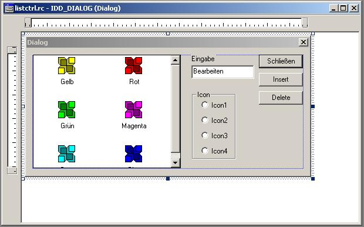
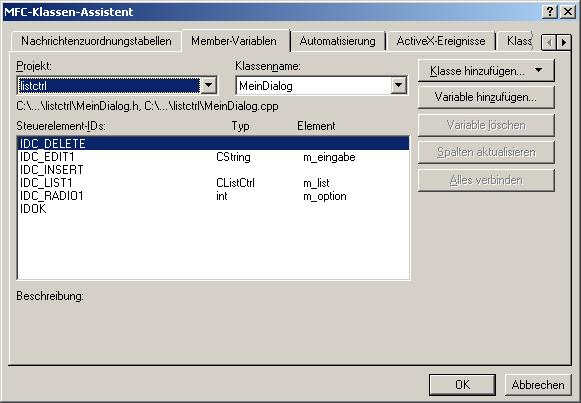
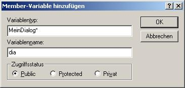
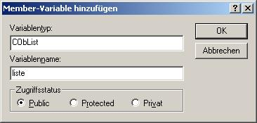
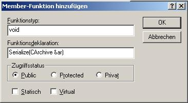
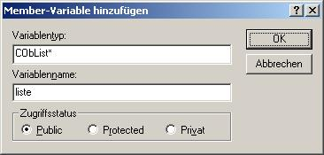
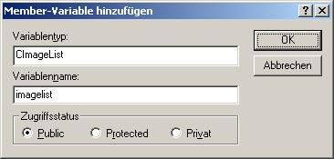
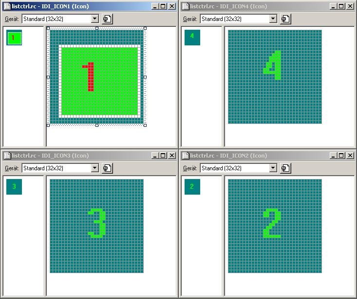

- Leider habe ich es nicht geschaft ein CListCtrl dazu zu bewegen, sich zu serialisieren. Desshalb musste ich jedes Element zusätzlich in einer CObList speichern um es später serialisieren zu können.
- Zuerst muss einmal ein nonmodaler Dialog erstellt werden. Wichtig ist, dass nun ein Listenelement anstatt eines Listenfeldes gebraucht wird.
Auch wichtig ist, dass die Optionsfelder in der Tabulatorreihenfolge nacheinander kommen. Beim ersten und beim letzten muss in den Eigenschaften Tabstopp angekreuzt werden und nur beim ersten muss Gruppe angekreuzt werden. Für dieses erste Optionsfeld kann nun auch eine Membervariable angelegt werden, die auch für die anderen Optionsfelder mitgenutzt wird.

- Hier nur ein Bild meiner Member-Variablen:

- Includieren der Klasse des modalen Dialogs (bei mir MeinDialog.h) in die Header-Datei der View und hinzufügen einer Membervariablen zur View für den Dialog.

- Diese Membervariable beim Programmstart initialisieren und bei Programmende wieder löschen.
CListctrlView::CListctrlView()
{
dia = NULL;
}
CListctrlView::~CListctrlView()
{
dia->DestroyWindow();
delete dia;
}
- Um die Elemente abspeichern zu können, muss noch eine Membervariable des Typs CObList in die Klasse ClistctrlDoc eingefügt werden.

- Serialisieren dieser Membervariable:
void CListctrlDoc::Serialize(CArchive& ar)
{
liste.Serialize(ar);
if (ar.IsStoring())
{
// ZU ERLEDIGEN: Hier Code zum Speichern einfügen
}
else
{
// ZU ERLEDIGEN: Hier Code zum Laden einfügen
}
}
- Jetzt wird noch eine Allgemeine Klasse gebraucht (meine heißt Element), die ein einzelnes Element repräsentiert. Folgende Membervariable werden gebraucht:
- Name : text
Typ : CString
zum Speichern des Titels
- Name : symbol
Typ : int
zum Speichern der Nummer des Symbols
- Hinzufügen der Macros DECLARE_SERIAL(Element) und IMPLEMENT_SERIAL(Element,CObject,1) zu den Dateien Element.h und Element.cpp
- Hinzufügen einer Memberfunktion Serialize(CArchive &ar) zur Klasse Element.

void Element::Serialize(CArchive &ar)
{
if (ar.IsStoring())
{
ar << symbol << text;
}else
{
ar >> symbol >> text;
}
}
- Mittels des Klassenassistenten die Methode OnInitialUpdate der View überschreiben. Sie wird beim Programmstart und bei jedem Laden aufgerufen. Das Schließen des Fensters bei jedem Aufruf dient dazu, beim Laden den Dialog dazu zu bringen beim erneuten erstellen des Dialogs, die Einträge im Listenelement an die Einträge in der CObList anzupassen.
void CListctrlView::OnInitialUpdate()
{
CView::OnInitialUpdate();
CListctrlDoc* pDoc = GetDocument();
ASSERT_VALID(pDoc);
// Diese Funktion wird auch nach einem Ladevorgang aufgerufen
// Wenn Fenster schon existiert
if (dia != NULL)
{
// Fenster schließen
dia->DestroyWindow();
delete dia;
}
// Neues Fenster erstellen
dia = new MeinDialog();
// Dem Dialog die Adresse der CObList mitteilen
dia->liste = &pDoc->liste;
// Wenn noch nicht in Windows registriert ist, registrieren
if (dia->GetSafeHwnd() == NULL)
dia->Create(dia->IDD,this);
}
- Einen Button in der Symbolleiste zeichnen und einen Handler dafür schreiben der ungefähr so aussehen soll:
void CListctrlView::OnDia()
{
if (!dia->IsWindowVisible())
dia->ShowWindow(SW_SHOW);
else
dia->ShowWindow(SW_HIDE);
}
- Nun müssen noch 2 Membervariablen zur Klasse MeinDialog hinzugefügt werden.


- Einen Handler für den Button Insert erstellen:
void MeinDialog::OnInsert()
{
UpdateData(true);
// In ListenElement einfügen
int wirklicherIndex = m_list.InsertItem(0,m_eingabe,m_option);
// Neues Element ertellen
Element* elem = new Element();
elem->text = m_eingabe;
elem->symbol = m_option;
// Sich die Adresse des Elements im Listenelement merken, um später
// festzustellen, dass beide zusammengehören
m_list.SetItemData(wirklicherIndex,(unsigned long)elem);
// In CObList einfügen
liste->AddTail(elem);
}
- Einen Handler für den Button Delete erstellen:
void MeinDialog::OnDelete()
{
// Diese Methode funktioniert auch für Mehrfachauswahl
POSITION pos = m_list.GetFirstSelectedItemPosition();
if (pos == NULL)
AfxMessageBox("Erst etwas auswählen");
else
while (pos)
{
int nItem = m_list.GetNextSelectedItem(pos);
// Holen des dazugehörigen Element in der CObList
// Suchen mittels der gemerkten Adresse
POSITION listepos = liste->Find((Element*)m_list.GetItemData(nItem));
// Löschen des Elements aus der CObList
delete liste->GetAt(listepos);
liste->RemoveAt(listepos);
// Löschen des Elements aus dem CListCtrl
m_list.DeleteItem(nItem);
}
}
- Nun müssen noch ein paar Icons gezeichnet werden. Diese sollten die Namen IDI_ICON1 bis IDI_ICON4 tragen.

- Die Methode OnInitDialog der Klasse MeinDialog mit dem Klassenassistent überschreiben:
BOOL MeinDialog::OnInitDialog()
{
CDialog::OnInitDialog();
if (imagelist.GetSafeHandle() == NULL)
{
imagelist.Create(32,32,0,4,1);
imagelist.Add(AfxGetApp()->LoadIcon(IDI_ICON1));
imagelist.Add(AfxGetApp()->LoadIcon(IDI_ICON2));
imagelist.Add(AfxGetApp()->LoadIcon(IDI_ICON3));
imagelist.Add(AfxGetApp()->LoadIcon(IDI_ICON4));
}
m_list.SetImageList(&imagelist,LVSIL_NORMAL);
POSITION pos = liste->GetHeadPosition();
Element* elem;
while (pos != NULL)
{
elem = (Element*)liste->GetNext(pos);
int wirklicherIndex = m_list.InsertItem(0,elem->text,elem->symbol);
m_list.SetItemData(wirklicherIndex,(unsigned long)elem);
}
m_list.Invalidate(true);
return TRUE; // return TRUE unless you set the focus to a control
// EXCEPTION: OCX-Eigenschaftenseiten sollten FALSE zurückgeben
}
- Fertig